WINCH UNIT > DISASSEMBLY |
| 1. REMOVE WINCH MOTOR ASSEMBLY |
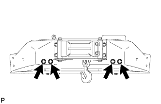 |
Remove the 4 bolts and member.
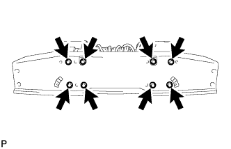 |
Remove the 8 bolts and winch base.
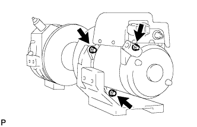 |
Remove the 3 bolts and winch motor.
| 2. REMOVE NO. 2 WINCH EARTH WIRE |
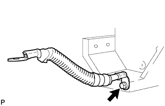 |
Remove the bolt and winch earth wire.
| 3. REMOVE WINCH ROLLER BRACKET ASSEMBLY |
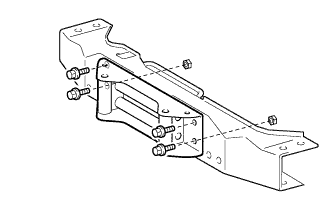 |
Remove the 2 nuts, 4 bolts and winch roller bracket.
| 4. REMOVE MAGNET SWITCH WINCH COVER |
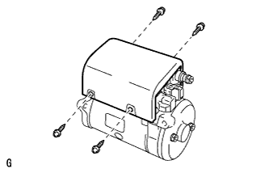 |
Remove the 4 screws and cover.
| 5. REMOVE WINCH MOTOR MAGNET SWITCH ASSEMBLY |
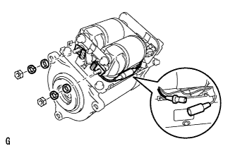 |
Disconnect the connector.
Remove the 2 nuts, 2 spring washers, 2 washers and wire harness.
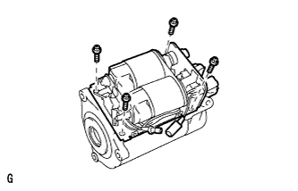 |
Remove the 4 bolts and magnet switch from the motor.
| 6. REMOVE WINCH MOTOR COMMUTATOR END FRAME |
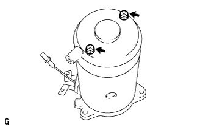 |
Remove the 2 bolts and commutator end frame.
| 7. REMOVE WINCH MOTOR O-RING |
Remove the O-ring.
| 8. REMOVE WINCH MOTOR BRUSH |
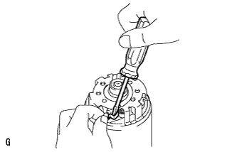 |
Using a screwdriver, pry the bush spring forward and pull the brush out of the holder.
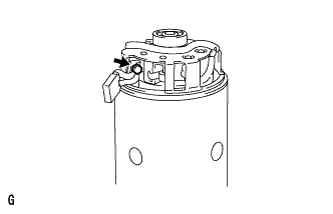 |
Remove the bolt and brush from the brush holder.
| 9. REMOVE WINCH MOTOR BRUSH HOLDER ASSEMBLY |
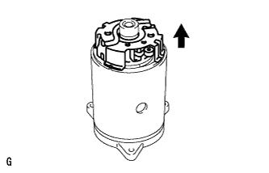 |
Remove the brush holder in the direction of the arrow shown in the illustration.
| 10. REMOVE WINCH MOTOR YOKE SUB-ASSEMBLY |
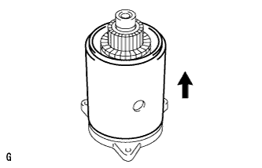 |
Remove the yoke in the direction of the arrow shown in the illustration.
| 11. REMOVE WINCH MOTOR ARMATURE SUB-ASSEMBLY |
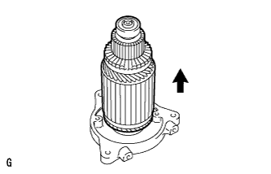 |
Remove the armature in the direction of the arrow shown in the illustration.
| 12. REMOVE NO. 1 WINCH MOTOR ARMATURE BEARING |
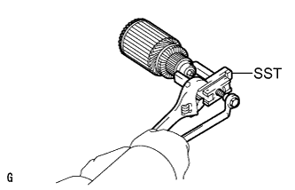 |
Using SST, remove the bearing.
| 13. REMOVE NO. 2 WINCH MOTOR ARMATURE BEARING |
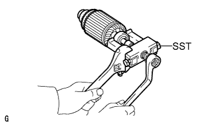 |
Using SST, remove the bearing.
| 14. REMOVE WINCH MOTOR BRUSH SPRING |
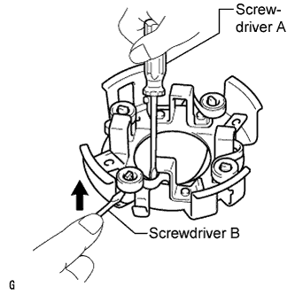 |
Insert a screwdriver, labeled A, as shown in the illustration and pry the spring forward, then move the spring in the direction of the arrow shown in the illustration with a screwdriver, labeled B, to remove it from the holder.